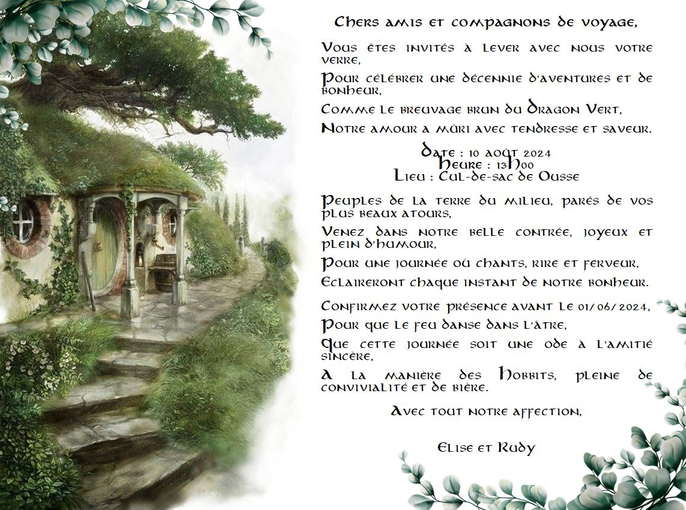

1O ans déjà !
Bienvenue à notre fête d'anniversaire !
Amis, famille, compagnons de voyage de la terre du milieu, nous sommes ravis de vous inviter à célébrer nos 10 ans de mariage comme de vrais Hobbits de la Comté.
{kind=link}
{kind=link}
{kind=link}
Confirmez votre présence avant le 01 juin 2024
Dans l'éclat d'une assemblée à venir,
Où festoiements et rires vont s'unir,
Préparons avec soin cet événement,
Que nos banquets soient riches, éblouissants.
Confirmez dès lors votre présence,
Avant le premier juin, avec aisance.
Par téléphone, par mail ou courrier,
Ou bien par pigeons, pour s'en amuser.
Que nos réunions soient un chant joyeux,
Où les verres ne seront jamais creux.
Dans l'attente de ce jour radieux,
Répondez-nous, pour un moment précieux.
Documents Imprimables
{kind=link}
Les peuples de la Terre du milieu
Les Hobbits
Les hobbits sont de petites créatures paisibles et joyeuses, connues pour leur amour de la nourriture, de la bonne compagnie et des aventures simples. Leur principale préoccupation est généralement de savoir quand sera le prochain repas.
Les Magiciens
Les magiciens, également connus sous le nom d'Istari, sont des êtres mystérieux envoyés en Terre du Milieu pour conseiller et guider les peuples libres dans leur lutte contre Sauron. Certains disent qu'ils sont les gardiens secrets de la lumière face aux ténèbres croissantes.
les Elfes
Les elfes sont des êtres gracieux et immortels, dotés d'une grande sagesse et d'une beauté éblouissante. Ils ont un lien profond avec la nature et sont connus pour leurs talents artistiques et leur habileté au combat.
Les Nains
Les nains sont des artisans habiles et des mineurs passionnés, réputés pour leur amour de l'or et des bijoux. Leur taille compacte est compensée par leur courage et leur détermination inébranlables.
Les Hommes

Les hommes sont des êtres divers, répartis en plusieurs royaumes et cultures. Ils sont courageux et ambitieux, mais souvent en proie à la corruption et à la tentation du pouvoir.
Les Ents
Les Ents sont des créatures semblables à des arbres, lentes à agir mais profondément attachées à la nature. Ils sont connus pour leur patience infinie, mais lorsqu'ils sont provoqués, leur colère est redoutable.
Les Orques
Les Orques sont des créatures tordues et maléfiques, créées par le sombre Seigneur Sauron pour servir dans ses armées. Leur seule joie semble résider dans la destruction et le chaos.
Les Gobelins
Les Gobelins sont des créatures laides et sournoises, adeptes du vol et de la tromperie. Ils vivent dans des cavernes sombres et souterraines, où ils élaborent des plans pour causer des ennuis aux autres peuples de la Terre du Milieu.
Les Trolls
Les Trolls sont de grandes créatures grossières, généralement stupides et maladroites. Bien qu'ils ne soient pas les plus brillants, leur force brute en fait des adversaires redoutables en combat rapproché.